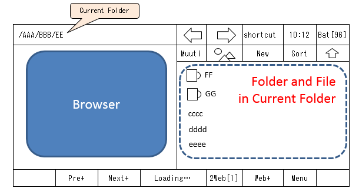

Page 3
Browser Features
Browser and Filer
Left pane can become Web Browser. Otherwise Right-Pane always shows file list in current folder.
So you can create Bookmark of current Web Page, Picture download etc. into current folder in Right-Pane.
CAUTION:Upper Bar always shows current folder. URL Not Displyed.
* Notification Bar(Status Bar) : In Preference, you can hide or show this bar.

- Site for Search
To open Site for Internet Search, Click "Menu" button/Select "Search"
* Search Site can chenaged in Preference(default:Google)
* Only one site can set in Preference. If you want to set some search sites, create shortcuts(Favorites-combo on Upper-Bar or
shortcut file of URL. Refer to each section in this manual)
- Bookmark
You can make Bookmark(URL link) of the Page you are looking at in current folder.
*this bookmark file works in windows PC when copyed.
(Operation)
Click "Menu" button/Select "Bookmark"
- 2 Browsers
You can open URL link on the Web page with another browser. So you can keep previous page as like "Portal", then continue browsing relative pages on another browser.
(Operation)
• Long-Click on a Link in a Web page and click "Open Another Browser".
• "2Web" button on Lower-Bar toggles Two Browsers.
- Save Picture
*For using this feature, you need to set 'Use Picture-Save Dialog' ON (Open Menu in lower bar and select ).If not so, Long-Click do the link on page open in another browser ,default.
(Operation)
Long-Click on a Picture in web page and select "Save picture".
- Page Shot
You can get page shot you are looking at by whole page or portion(only visible part).
* also can get whole phone-screen shot.
(Operation)
Click "Menu" button /select "Page Shot(whole)", "Page Shot(portion)" or "Take Screenshot" for
Whole Screen shot in Device screen.
CAUTION:
• When Downloded picture opend in some Viewer App, blurry occurs, especially whole shot of vertically long page.
This is almost caused by Viewer App's ability(In some viewer by waiting several tens of seconds, you might get normal image of the picture).
• Because of Memory-Lacking, warning dialog for "Low-Resolution shot" may shown. If in "Low-Resolution" and still shown Memory-Lacking, restarting App may enable to shot.
- Saving Page in MHT format
You can save current page, as MHT file.
It is useful for text selection, Copy and paste or picture saving in the page later.
MHT file downloaded can be opened in this app's Browser(click downloaded MHT file).
(Operation)
Click "Menu" button /select "MHT Save"
- Web FullScreen Mode
You can hide Upper Tool Bar or both Upper and Lower Bars in Web mode. So you can get good visibility in Web browsing.
When Upper Bar hidden(including Fullscreen mode), Button with abbreviated current path shown above file list pane. By Long-Click this button, you can open Folder history.
(Operation)
By "Two-Finger Swipe upward", Upper Tool Bar hidden. By the same(downward), recover bar.
You can hide both Upper and Lower Bars by "Three-Finger Swipe upward".
* By checking "Hide both bars by 2-Fingers" in Preference, you can hide both bars in Two-Finger.
* If 2(3)-finger swipe don't work(in some sites), long-click "menu" button on Lower-Bar and select "Hide/Show bar".
* File-List pane on right side not hidden automatically. Manually slide Border with "Grip-Ball".
* In Explorer-Mode, bars cannot hidden.
Operation on Web FullScreen Mode
When Web FullScreen Mode, you cannot do operations by Tool-Bar. So you need to use Back-Key on the Device.
By click Device Back-Key, Operation Menu Popuped.
on Back-Key,
(Simple Click):shows Menu for "Next/Previous" Navigation, "change another browser", open "Search site" ,"Create Bookmark" or
"show Lower-Bar".
(Long-Click):Web History or go to Explorer mode.
* If any function set to back key long-click in your device, you cannot do long-click operations above.
Please show Lower-Bar by simple-click back key, and operate via Lower bar.
- Web Side-by-Side Mode
You can show 2 browsers side-by-side with One browser focused which highlightened by Colored-Frame.
You can operate (open URL shortcut, Page Shot, Create Bookmark etc.) For the focused browser. To open on-page URL link by another browser is also valid.
To change focused browser, simply touch non-focused browser.
*For Colored-Frame, its color and frame width can changed in Preference.
(Operation)
Long-Click "2Web" Button on Lower-Bar to Go to Side-by-Side Mode or back to Single Browser mode.
* SxS Button above the file list does the same (this button can hidden in Preference).
For Operaton in Side-by-Side Mode, Long-Click "Menu" Button on Lower-Bar with "Swap Pages" and browsers array direction change(only in horizontal device direction) menus shown.
- Web History
Retains History of pages you visited. You can select one of them and access again.
You can change retain-count of history etc. in Preference.
When 'local file' opened in built-in Browser , not recorded in Web History of App.
* Browser's Back-Forward Navigation function depends on Android Browser component. So 'Navigation' info (this is including local file opened) is lost with App's end.
(Operation)
Long-Click "Pre+" or "Next+" Button on Lower-Bar(if Folder-Navi Button hidden on Upper-Bar,
you need to change to Web Mode(then button color is cyan)).
*'+' in caption of Button shows that this button has another function in Long-Click.
- Other Function
No picture option>
Not show pictures in page.
(Operation)
Set on Preference or Long-Click Web loading status label on Lower-Bar
Web client User-Agent option>
You can select Mobile/Desktop.(in some site, not effect)
(Operation)
Set on Preference or Long-Click Web loading status label on Lower-Bar
URL Manual Input>
When input URL manually
(Operation)
Click Web loading status label on Lower-Bar
Open with Chrome>
Open current page with Chrome.
• Useful especially for Non English-naitve users to use Chrome's tranlation feature(Open Menu in Chrome/Select'Translaton').
• Even in PC browsers,some page's function often not work correctly(in listbox items or page transition in purchase etc.) because of page having special site design.In those case, use this function.
(Operation)
Click Web loading status label on Lower-Bar
Caution:
- In some site, external Download out of this browser used, and cannot download target file(occationally, PDF download).
If so, this App seems like nothing done. Please use Android native Browser etc., sorry.
- If 'Downloaded' shown(in fade fashion(toast)in lower screen), probably file downloaded. If not found current folder, confirm Android OS 'download' folder(or in that folder in internal Disk if you are in External SD Card)
* With Open File-link on page in another Browser, etc, causes sometimes enable to starting download.